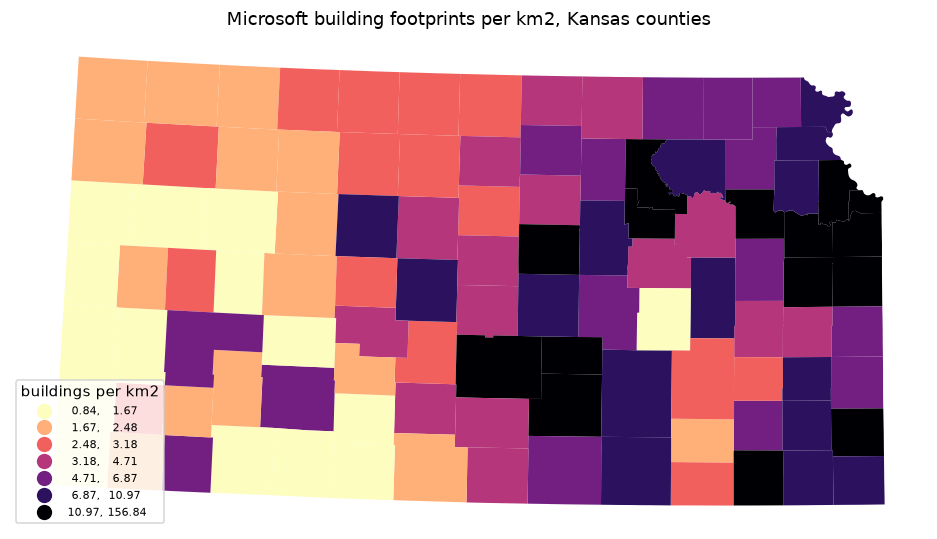
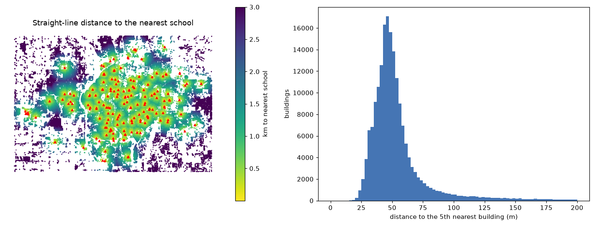
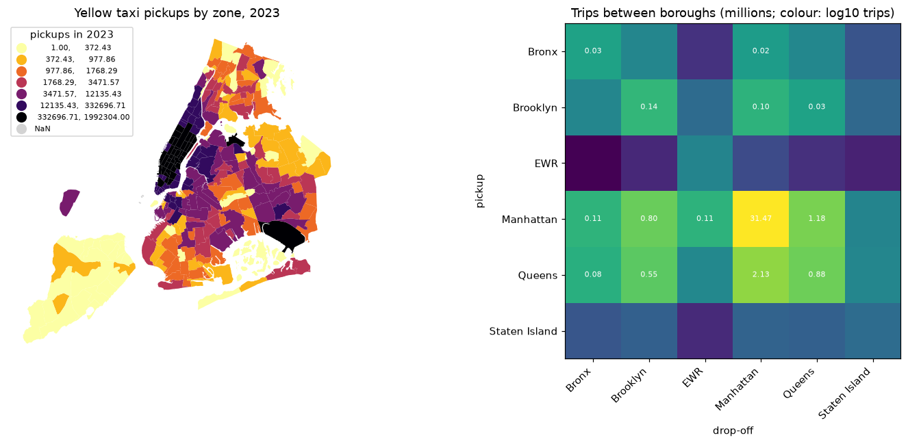

Geometry Operations, Clipping, Spatial Joins and Nearest Neighbours on Millions of Features
Vector data scale differently from rasters. Measuring, buffering or simplifying each feature is independent work and splits cleanly over cores. Relating features to each other (which county holds this building, which school is nearest to it) is not: any feature may touch any other, and a naive comparison of every pair is hopeless for millions of features. This notebook processes the 1.6 million Microsoft building footprints of Kansas with geolattice.distributed.vector: per-feature operations on all cores and the GPU, clipping and spatial joins with partition pruning, a GPU point-in-polygon join, and nearest-neighbour searches. It ends with 38 million New York City taxi trips summarized by taxi zone on the CPU and with cuDF on the GPU.
find candidate pairs first, then test them exactly
Finding candidate pairs
Testing whether two polygons intersect is expensive; testing whether their bounding boxes intersect is four comparisons. Every efficient spatial join therefore works in two steps:
Filter: a spatial index (an R-tree such as GEOS’s STRtree) returns the pairs whose boxes overlap.
Refine: the exact geometric predicate (intersects, within, …) runs only on those candidates.
When the data are split into partitions, the same idea works one level up: a partition of left features needs only the right features whose boxes touch the partition’s bounding box. This partition pruning is effective only when partitions are spatially compact, which is why GeoLattice sorts features along a Hilbert curve first (notebook 00).
Shuffles
When both tables are large and partitioned differently, a distributed join must move rows so that features that might match end up in the same partition: a shuffle, the most expensive step in distributed vector work. GeoLattice avoids it when one side is small enough to send to every task (counties, zones, facilities), and partitions only the large side. Spark (notebook 10) and dask-geopandas shuffle both sides when neither is small.
Points in polygons on a GPU
The most common big join is points in polygons (GPS fixes, building centroids, sensor locations). Its refine step is the crossing-number test: count how often a ray from the point crosses the polygon’s edges. Every candidate pair is independent, which suits a GPU.
Vector Processing with GeoLattice
Function
Returns
GPU
pdist.vector.area, length, bounds
Series or DataFrame aligned to the input
CuPy kernels, opt-in (compute="gpu")
buffer, simplify, centroid, make_valid, to_crs
the input type with new geometry
CPU only (GEOS, PROJ)
clip(gdf, mask)
features clipped to the mask
CPU; partitions outside the mask are skipped
sjoin(left, right, predicate=, how=)
same columns and rows as geopandas.sjoin
point-in-polygon on GPU; engine="sedona" for Spark
knn(left, right, k=)
long table of index_right, distance, k
exact brute force in float64 on GPU, opt-in
GeoPandas input comes back as GeoPandas in the input’s row order; dask-geopandas input stays lazy. Partitions run as Dask tasks on local threads (Shapely 2 releases the GIL) or on the active cluster.
Learning objectives
Separate per-feature operations from operations between features, and know which parallelize trivially.
Explain the filter and refine steps, partition pruning and shuffles.
Run per-feature operations on 1.6 million buildings on all cores and on the GPU, and check the GPU against the CPU.
Clip and spatially join with partition pruning and confirm the result equals geopandas.sjoin.
Run a point-in-polygon join on the GPU and a nearest-neighbour search on CPU and GPU.
Aggregate 38 million taxi trips to zones with Dask and with cuDF.
Data
Dataset
Content
Kansas building footprints
1.6 million polygons (Microsoft, 2022 release), cached by dd.kansas_buildings()
Great Plains counties
225 county polygons, of which 105 in Kansas (EPSG:5070)
Wichita schools and hospitals
183 OpenStreetMap features, cached by dd.wichita_facilities()
NYC yellow taxi trips 2023 and taxi zones
38.3 million trips; 263 zone polygons
Contents
Setup
Reprojecting 1.6 million buildings
Per-feature measures on CPU and GPU
Per-feature geometry operations
Clipping to a county
Buildings by county: a partitioned spatial join
Points in polygons on the GPU
Nearest neighbours
38 million taxi trips by zone
Summary and exercises
Setup
Code
import warnings # warning controlwarnings.filterwarnings("ignore") # hide routine library warningsimport os # environment and CPU countimport time # wall-clock timingfrom pathlib import Path # file pathsimport matplotlib.pyplot as plt # figuresimport numpy as np # arraysimport pandas as pd # tablesimport geopandas as gpd # vector dataimport xarray as xr # labelled rastersimport geolattice # GeoLatticeimport geolattice.distributed as pdist # distributed and GPU spatial computingimport dist_data as dd # chapter helper: paths, cached downloads, timersplt.rcParams.update({"figure.dpi": 110}) # figure resolutionpd.set_option("display.width", 140) # wider printed tablesOUT = Path("outputs") # results and scratch files written by this chapterOUT.mkdir(exist_ok=True) # create it if neededcaps = pdist.capabilities() # engines and GPUs on this machineprint("GeoLattice", geolattice.__version__, "|", os.cpu_count(), "CPU cores |", caps["gpus"], "GPU(s)", # versionsf"({caps.get('gpu_memory_total', 0) /1e9:.0f} GB)"if caps["gpus"] else"") # GPU memoryimport dask # Dask configurationdef sync(): # wait for queued GPU work so timings are realif caps["gpus"]: # only with a GPUimport cupy as cp # GPU arrays cp.cuda.Device().synchronize() # block until donedef timed(fn, n=2): # best wall time of n runs after a warm-up, and the last result out = fn(); sync() # warm-up best = np.inf # best timefor _ inrange(n): # timed runs t = time.perf_counter(); out = fn(); sync(); best =min(best, time.perf_counter() - t) # one runreturn best, out # time and result
The footprints come in longitude and latitude (EPSG:4326). Areas and distances need metres, so the first step reprojects them to the Albers equal-area grid (EPSG:5070) of the Great Plains rasters. pdist.vector.to_crs reprojects partitions in parallel.
Code
b4326 = dd.kansas_buildings() # 1.6 million polygons, EPSG:4326print(f"{len(b4326):,} buildings, {int(b4326.geometry.count_coordinates().sum()):,} vertices") # sizet_gpd, _ = timed(lambda: b4326.to_crs(5070), n=1) # GeoPandas, one callt_pd, bld = timed(lambda: pdist.vector.to_crs(b4326, 5070), n=1) # 24 partitions on 24 threadsprint(f"GeoPandas to_crs {t_gpd:.2f} s | pdist.vector.to_crs {t_pd:.2f} s | same result:", # timingsbool(bld.geometry.geom_equals_exact(b4326.to_crs(5070).geometry, 1e-6).all())) # check
1,605,334 buildings, 10,056,309 vertices
GeoPandas to_crs 2.28 s | pdist.vector.to_crs 1.76 s | same result: True
Per-feature measures on CPU and GPU
Area, perimeter and bounding boxes need only each polygon’s own vertices. On the CPU, GEOS computes them partition by partition on all cores; on the GPU, GeoLattice packs all vertices into flat CuPy arrays (a “ragged” layout with offsets per polygon) and computes every polygon in one kernel launch.
Code
rows = [] # timingsfor name, fn in [("area", pdist.vector.area), ("length", pdist.vector.length), ("bounds", pdist.vector.bounds)]: # measures t_g, _ = timed(lambda: getattr(bld.geometry, name if name !="bounds"else"bounds"), n=1) # plain GeoPandas, one core t_c, r_c = timed(lambda: fn(bld, compute="cpu")) # all cores t_u, r_u = timed(lambda: fn(bld, compute="gpu")) if caps["gpus"] else (np.nan, r_c) # GPU diff =float(np.nanmax(np.abs(np.asarray(r_u, float) - np.asarray(r_c, float)))) # largest difference rows.append({"measure": name, "GeoPandas (s)": t_g, "pdist CPU (s)": t_c, "pdist GPU (s)": t_u, "largest |GPU - CPU|": diff}) # rowpd.DataFrame(rows).set_index("measure").round(4) # table
GeoPandas (s)
pdist CPU (s)
pdist GPU (s)
largest |GPU - CPU|
measure
area
0.0526
0.0282
1.2020
0.0004
length
0.0535
0.0268
1.2243
0.0000
bounds
0.0568
0.0365
1.4107
0.0000
Code
area = pdist.vector.area(bld) # m2, GPU when availableprint(area.describe(percentiles=[0.1, 0.5, 0.9, 0.99]).round(0).to_string()) # distributionprint(f"total roof area {area.sum() /1e6:,.0f} km2 ({area.sum() /213_100e6:.3%} of Kansas)") # total
count 1605334.0
mean 241.0
std 1016.0
min 6.0
10% 67.0
50% 165.0
90% 344.0
99% 1443.0
max 354681.0
total roof area 387 km2 (0.182% of Kansas)
The GPU and CPU agree to rounding, but the GPU was about forty times slower. Each measure is a few additions per vertex, while packing 1.6 million Shapely polygons into flat coordinate and offset arrays happens in Python on the CPU and copying them to the device follows; the kernel itself is a small part of the time. That is why these GPU versions are opt-in: compute="auto" keeps the CPU, and compute="gpu" must be asked for. They pay off only when the geometries are already in a GPU format (for example from cuSpatial or a GeoArrow buffer). Half of Kansas’s buildings have less than about 150 m2 of footprint; the largest are warehouses, factories and grain elevators.
Per-feature geometry operations
Buffer, simplify, centroid and repair change the geometry and need GEOS, so they run on the CPU. They still parallelize over partitions.
Buffering, the heaviest of the four, gains most from the cores. The cheap operations gain less, because splitting the frame into partitions and joining the results costs time of its own.
Clipping to a county
pdist.vector.clip partitions the buildings along a Hilbert curve and drops every partition whose bounding box misses the mask before any clipping is done. Sedgwick County (Wichita) is small compared with Kansas, so most partitions are dropped.
partitions touching Sedgwick County: 6 of 24
GeoPandas clip 1.62 s, pdist.vector.clip 1.06 s; 222,582 buildings in both: True
Buildings by county: a partitioned spatial join
Which county is each building in? pdist.vector.sjoin cuts the 1.6 million buildings into Hilbert-ordered partitions; for each partition, the county polygons whose boxes touch the partition’s box are the only ones sent to its task. The result has the same rows and columns as geopandas.sjoin.
Code
ks_c = ks[["FIPS", "county", "geometry"]] # county keys and shapest_g, j_g = timed(lambda: gpd.sjoin(bld, ks_c, predicate="intersects"), n=1) # GeoPandas on one coret_p, j_p = timed(lambda: pdist.vector.sjoin(bld, ks_c, predicate="intersects"), n=1) # partitioned, 24 threadssame =set(zip(j_g.index, j_g.index_right)) ==set(zip(j_p.index, j_p.index_right)) # same building-county pairsprint(f"GeoPandas {t_g:.2f} s | pdist {t_p:.2f} s | {len(j_p):,} building-county pairs | identical: {bool(same)}") # resultprint(f"buildings in two counties (on a boundary): {int(j_p.index.duplicated().sum()):,}") # boundary cases
GeoPandas 2.01 s | pdist 0.83 s | 1,605,780 building-county pairs | identical: True
buildings in two counties (on a boundary): 446
Code
per = j_p.groupby("FIPS").size().rename("buildings") # buildings per countyks_map = ks.merge(per, on="FIPS", how="left").fillna({"buildings": 0}) # join the countsks_map["per_km2"] = ks_map.buildings / (ks_map.area /1e6) # densityfig, ax = plt.subplots(figsize=(11, 5)) # one mapks_map.plot("per_km2", ax=ax, cmap="magma_r", legend=True, scheme="quantiles", k=7, # quantile classes legend_kwds={"title": "buildings per km2", "loc": "lower left", "fontsize": 7}) # legendax.set_title("Microsoft building footprints per km2, Kansas counties"); ax.set_axis_off(); plt.tight_layout(); plt.show() # drawks_map.nlargest(5, "buildings")[["county", "buildings", "per_km2"]].round(1) # the five largest

county
buildings
per_km2
15
Sedgwick County
222582
85.0
76
Johnson County
195082
156.8
96
Shawnee County
83109
57.9
98
Wyandotte County
61582
152.3
95
Douglas County
42029
34.3
Sedgwick, Johnson, Shawnee and Wyandotte counties (Wichita, the Kansas City suburbs and Topeka) hold the most buildings; the western counties have fewer than ten per square kilometre. The partitioned join gave exactly the same pairs as GeoPandas, including the buildings that straddle a county line and so join to two counties.
Points in polygons on the GPU
Joining building centroids instead of polygons turns the question into a point-in-polygon join, which GeoLattice runs on the GPU: the STRtree supplies candidate pairs and a CUDA kernel runs the crossing-number test for all of them at once.
GPU pairs equal CPU pairs: True
1,605,334 points matched; unmatched (outside every county): 0
seconds
GeoPandas, one core
0.288
pdist CPU, 24 threads
1.121
pdist GPU
0.746
A point lies in exactly one county, so the 1.6 million points give 1.6 million pairs, identical on CPU and GPU. The timings hold a surprise: plain GeoPandas on one core was the fastest. Its bulk STRtree.query with a predicate runs entirely in GEOS’s C code, and with only 105 polygons the refine step is cheap. The partitioned join spends more on its own bookkeeping (Hilbert sorting 1.6 million points, 24 tasks, concatenating and restoring the row order) than it saves; the GPU refine step makes it faster than the partitioned CPU path, but not than GeoPandas. Partitioning pays off when the refine step is expensive (the polygon join above was more than twice as fast), when the data do not fit one process, or on a cluster. Measure before assuming that parallel is faster.
Nearest neighbours
pdist.vector.knn finds the k nearest points: a multi-threaded KD-tree on the CPU, an exact brute-force search in float64 on the GPU (which pays off when the target set is small to moderate). Two questions for Wichita:
Which school is nearest to each of its buildings, and how far is it (straight line)?
How far apart are buildings: the distance from each building to its 5 nearest neighbours.
Code
fac = dd.wichita_facilities() # schools and hospitals, EPSG:5070schools = fac[fac.amenity =="school"].reset_index(drop=True) # 171 schoolswich = pts.cx[schools.total_bounds[0] -2000:schools.total_bounds[2] +2000, # buildings around Wichita schools.total_bounds[1] -2000:schools.total_bounds[3] +2000] # 2 km marginprint(f"{len(wich):,} buildings and {len(schools)} schools") # sizest_c, nn_c = timed(lambda: pdist.vector.knn(wich, schools, k=1, compute="cpu")) # KD-treet_u, nn_u = timed(lambda: pdist.vector.knn(wich, schools, k=1, compute="gpu")) if caps["gpus"] else (np.nan, nn_c) # GPUprint(f"nearest school: CPU {t_c:.3f} s, GPU {t_u:.3f} s, same answer: {bool(np.allclose(nn_c.distance, nn_u.distance))}") # checkprint((nn_c.distance /1000).describe(percentiles=[0.5, 0.9, 0.99]).round(2).to_string()) # km to the nearest school
183,800 buildings and 171 schools
nearest school: CPU 0.017 s, GPU 0.038 s, same answer: True
count 183800.00
mean 1.22
std 1.21
min 0.00
50% 0.78
90% 2.70
99% 6.36
max 10.60
Code
t_c, self_c = timed(lambda: pdist.vector.knn(wich, k=5, compute="cpu")) # 5 nearest other buildingst_u, self_u = timed(lambda: pdist.vector.knn(wich, k=5, compute="gpu")) if caps["gpus"] else (np.nan, self_c) # GPUprint(f"5 nearest neighbours of {len(wich):,} buildings: CPU {t_c:.2f} s, GPU {t_u:.2f} s,", # timings"same distances:", bool(np.allclose(self_c.distance.values, self_u.distance.values))) # checkfig, ax = plt.subplots(1, 2, figsize=(13, 5)) # two panelsd1 = nn_c.distance /1000# kmsc = ax[0].scatter(wich.geometry.x, wich.geometry.y, c=d1.values, s=0.3, cmap="viridis_r", vmax=3) # buildings coloured by distanceschools.plot(ax=ax[0], color="r", markersize=8, marker="^") # schoolsplt.colorbar(sc, ax=ax[0], label="km to nearest school"); ax[0].set_aspect("equal"); ax[0].set_axis_off() # labelsax[0].set_title("Straight-line distance to the nearest school") # titleax[1].hist(self_c[self_c.k ==5].distance, bins=np.linspace(0, 200, 81), color="#4575b4") # distance to the 5th neighbourax[1].set_xlabel("distance to the 5th nearest building (m)"); ax[1].set_ylabel("buildings") # axesplt.tight_layout(); plt.show() # draw
5 nearest neighbours of 183,800 buildings: CPU 0.10 s, GPU 21.10 s, same distances: True

With 171 schools as targets both searches take a few hundredths of a second. With 184,000 targets (the self search) the GPU’s brute force compares every pair, about 3 x 10^10 distances, and took around 200 times longer than the KD-tree, whose search grows only with the logarithm of the number of targets. GPU knn is therefore opt-in as well. Straight-line distances underestimate travel distance; notebook 07 measures the same accessibility along the road network.
38 million taxi trips by zone
The 2023 taxi records carry the pickup and drop-off zone ID rather than coordinates, so the spatial step is an attribute join between trip counts and the 263 zone polygons. The counting is the heavy part: 38 million rows. It runs once with Dask on the CPU (one partition per Parquet row group) and once with cuDF on the GPU.
Code
cols = ["PULocationID", "DOLocationID", "total_amount"] # the columns neededtrips = dd.taxi_trips(columns=cols) # lazy Dask DataFramet_cpu, pu = timed(lambda: trips.groupby("PULocationID").total_amount.agg(["count", "mean"]).compute(), n=1) # Dask on CPUprint(f"Dask on CPU: {t_cpu:.2f} s for {int(pu['count'].sum()):,} trips") # timeif caps["gpus"]: # GPU dataframefrom geolattice.distributed._backend import rapids # imports cuDF without changing CuPy's allocator cudf = rapids("cudf") # GPU DataFrames t_read, g = timed(lambda: cudf.read_parquet(dd.TAXI, columns=cols), n=1) # read straight into GPU memory t_gpu, pu_g = timed(lambda: g.groupby("PULocationID").total_amount.agg(["count", "mean"])) # group on the GPUprint(f"cuDF: read {t_read:.2f} s, group by zone {t_gpu:.3f} s; same counts:", # timebool((pu_g.to_pandas().sort_index()["count"] == pu.sort_index()["count"]).all())) # checkdel g # free GPU memory
Dask on CPU: 0.28 s for 38,310,226 trips
cuDF: read 0.10 s, group by zone 0.025 s; same counts: True
Code
zones = dd.taxi_zones() # 263 zone polygonszmap = zones.merge(pu.rename(columns={"count": "pickups", "mean": "mean_fare"}), left_on="LocationID", right_index=True, how="left") # attribute joinflows = trips.groupby(["PULocationID", "DOLocationID"]).size().compute() # trips between every pair of zonesboro = zones.set_index("LocationID").borough # zone -> boroughf = flows.rename("trips").reset_index() # as a tablef["from"] = f.PULocationID.map(boro); f["to"] = f.DOLocationID.map(boro) # boroughsod = f.pivot_table(index="from", columns="to", values="trips", aggfunc="sum").fillna(0) /1e6# millions of tripsfig, ax = plt.subplots(1, 2, figsize=(14, 6), gridspec_kw={"width_ratios": [1.1, 1]}) # map and matrixzmap.plot("pickups", ax=ax[0], cmap="inferno_r", legend=True, scheme="quantiles", k=7, # pickups per zone legend_kwds={"title": "pickups in 2023", "fontsize": 7, "loc": "upper left"}, missing_kwds={"color": "lightgrey"}) # legendax[0].set_title("Yellow taxi pickups by zone, 2023"); ax[0].set_axis_off() # titleim = ax[1].imshow(np.log10(od.values *1e6+1), cmap="viridis") # log scaleax[1].set_xticks(range(len(od.columns))); ax[1].set_xticklabels(od.columns, rotation=45, ha="right") # labelsax[1].set_yticks(range(len(od.index))); ax[1].set_yticklabels(od.index) # labelsfor (i, j), v in np.ndenumerate(od.values): # annotate ax[1].text(j, i, f"{v:.2f}"if v >=0.01else"", ha="center", va="center", color="w", fontsize=7) # millionsax[1].set_title("Trips between boroughs (millions; colour: log10 trips)"); ax[1].set_xlabel("drop-off"); ax[1].set_ylabel("pickup") # labelsplt.tight_layout(); plt.show() # draw

Yellow taxis are a Manhattan service: most trips start and end there, with the airports (JFK and LaGuardia, in Queens) the main exceptions. Reading the Parquet file straight into GPU memory and grouping there took about half the Dask time, and the group-by itself only a few hundredths of a second. For tabular aggregations that fit in GPU memory, cuDF is the quickest tool on this machine; Dask DataFrames take over when the table does not fit.
Summary and exercises
Per-feature operations split over partitions: buffering 1.6 million buildings ran almost eight times faster on 24 threads than in plain GeoPandas, simplifying four times; cheap operations such as centroids gained little.
Area, length and bounds also run as CuPy kernels; the GPU matched the CPU to rounding but was about forty times slower, because packing the geometries dominates. These GPU versions are opt-in.
Spatial joins filter with bounding boxes and refine exactly. Partition pruning sent each Hilbert-ordered partition only the counties near it, and the result equalled geopandas.sjoin; it halved the time of the polygon join, but plain GeoPandas won the cheap point-in-polygon join.
The GPU point-in-polygon join and the GPU k-nearest-neighbour search gave the same answers as the CPU. Brute-force GPU knn was far slower than the KD-tree for large target sets.
38 million taxi trips were grouped by zone with Dask and with cuDF; cuDF took about half the time, almost all of it reading the file.
Exercises
Repeat the county join with npartitions=6, 24 and 96. How does the time change, and why?
Find the nearest hospital for each Wichita building with k=3, and the share of buildings more than 5 km from any hospital.
Buffer each school by 800 m and count the buildings within walking distance with pdist.vector.sjoin(..., predicate="dwithin", distance=800) on the school points instead. Are the two approaches equivalent?
Group the taxi trips by hour of day and pickup borough with cuDF, and plot the daily cycle.